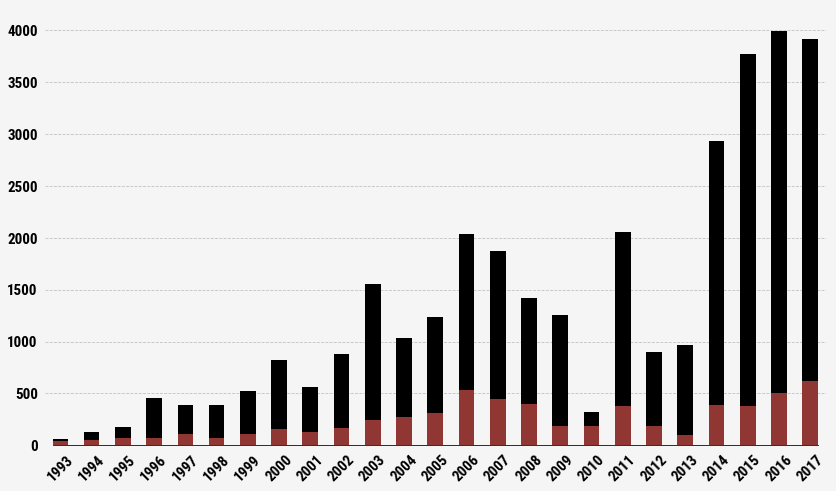

Department of Viciousness and Stupidity
BY Kevin Litman-Navarro
Published August 3, 2018
On April 20, 2018, 19 year-old Snaid Tadese died by suicide in a German asylum center — in an apparent act of desperation, she had strangled her baby before killing herself. Tadese was a refugee, having traveled over 3,000 miles to seek shelter in the European Union.
After successfully escaping the oppresive Eritrean dictatorship, Tadese suffered through the degredation and trauma of travelling across Libya and the Mediterranean as smugglers’ cargo. Upon her arrival in Germany, Tadese and her cohort were subjected to constant police intimidation, late night searches, and threats of deportation. Eventually, she was assigned a room in the small village of Eckolstädt, and promptly separated from her friends, leaving her in solitude as a foreigner who didn't speak German or English.
While her death didn't garner much media attention, her story was covered in the local press, where it was noticed by Dutch advocacy group United for Intercultural Action (UNITED). UNITED entered Tadese's name into “The List,” a running total of all reported migrant and refugees deaths in and on the way to the European Union. As of May 5, 2018, The List contains 34,361 people.
Fortress Europe
While the refugee crisis has ramped up in recent years, UNITED has been tracking migrant deaths dating back to 1993. Their contention is that many of these refugees die because of a set of policies they refer to as "Fortress Europe" — a reference to the territory occupied by Nazi Germany during the second World War.
According to UNITED, these policies are meant to make it difficult for migrants to reach the European Union, forcing many into dangerous situations, like crossing the Mediterranean in an overcrowded boat.
Refugee deaths since 1993
Most drown while crossing the Mediterranean, but a handful die every year from other causes.

But restrictive policies towards migrants and refugees also endanger them while attempting to entering the European Union and after they've already crossed the border. Poor conditions in refugee camps and asylum centers can result in disease and malnutrition, and nationalist bigotry towards the migrant population can lead to anything from social isolation to violence.
How Refugees Have Died After Crossing the Mediterranean
Since 1993, refugees and migrants have faced a new dangers after escaping their home countries.
Trapped in enclosed spaces
Gun violence
Refugees must become stowaways
to venture across Europe. Hiding in enclosed
spaces often leads to dehydration,
asphixiation, and physical trauma
Of the 72 gun homicides in 2017, 67 were commited by
Turkish border guards.
298
443
Escaping law enforcement
Getting caught by the police can result in
deportation for a migrant without an approved
asylum claim. So they run. Across highways,
onto electrified train tracks and off the tops
of buildings.
136
236
346
Car crashes
Death by suicide
Smuggles pile large groups of refugees into trucks
to provide cheap passage. Safety isn’t the smugglers’
top priority — when they end up in car accidents,
it’s often fatal.
Hundreds of migrants have died by suicide in
refugee camps and detention centers. For
some, a rejected asylum claim is the catalyst:
even death can be preferable to deportation.
Actually, you do have to live like a refugee
No one is signing up for the migrant life because they are looking for adventure. Generally, people are fleeing violence, conflict, and otherwise unlivable conditions. A new generation of climate refugees is now being forced to leave their homes, as rising temperatures have led to food shortages in places like sub-Saharan Africa.
Where are refugees on the list coming from?
We only know for about half of them, and for some we only know their home region.
Looking specifically at African refugees, you can see how environmental disasters and violence translate into higher numbers of migrants trying to reach Europe, and, consequently, more deaths.
African Refugee deaths since 1993
2015: Civil war in Somalia, terror groups like Boko Haram,
and food shortages lead to an increase in refugees.
2006: War in Darfur forces tens of thousands
to flee Sudan and Chad.
All this, to quote Vonnegut, because of the stupidity and viciousness of ourselves and of all mankind.